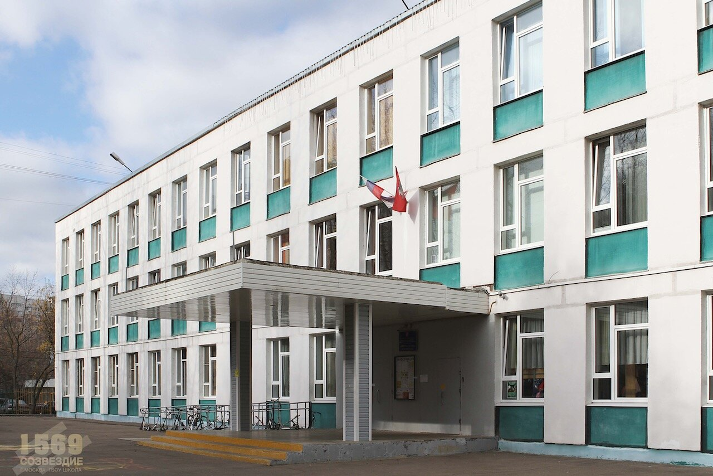

 Реализуются: - общеобразовательная программа основного и среднего общего образования; - программа творческого междисциплинарного обучения « Одаренный ребенок» ( МДО); Классы с расширенным изучением отдельных предметов. Ответственный за реализацию образовательного процесса: Чумаченко Наталья Владимировна Телефон: 8-495-394-04-77, Заместитель директора: Почевалова Раиса Валентиновна, телефон +7(495) 393-21-12